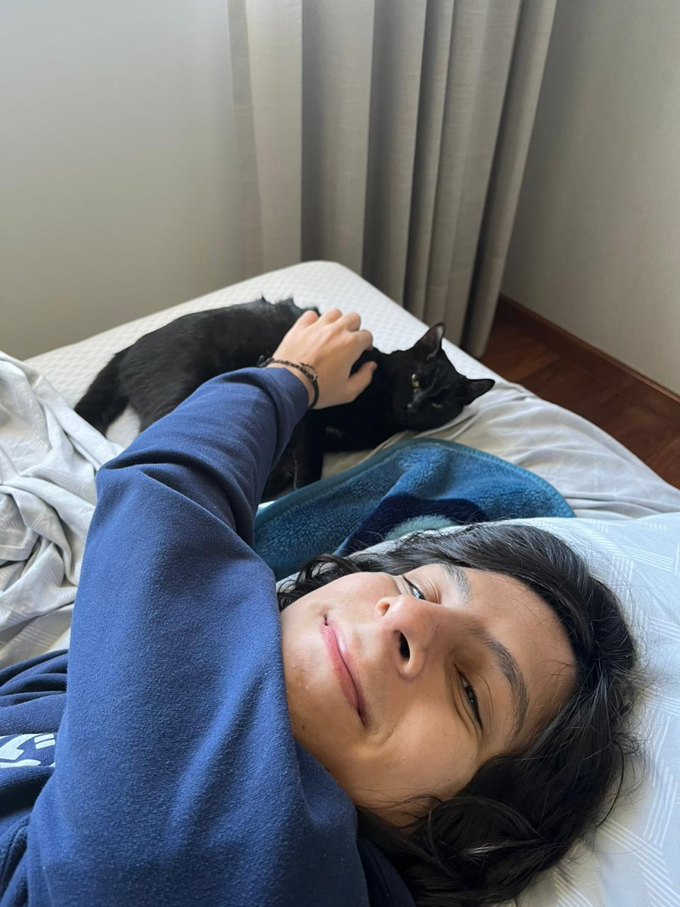
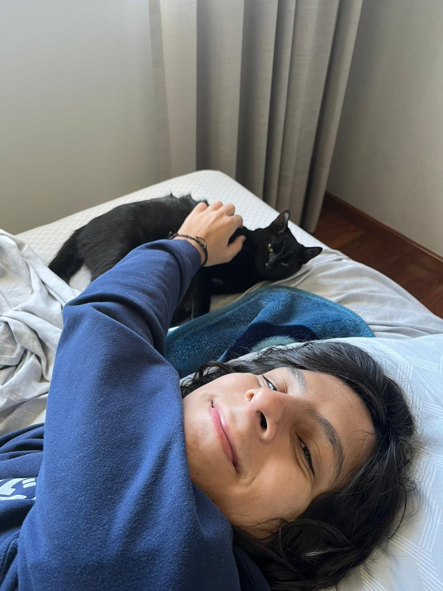

João Henri
 

hands always warm, sleepyhead, league player. networks, microservices, observability.
Experience:
- work: google; previously at ifood, suse rancher, lfx
- academic: universidade de são paulo, sbrc 2023 paper
- resume: 2024
- kubernetes: kubernetes, ingress-nginx, kubectl, kpng
- opentelemetry: opentelemetry-collector-contrib
- coredns: coredns
- grafana: grafana-operator, grafana-api-golang-client
- e-mail: contact.joaohenri@gmail.com
- github: github.com/jaehnri
- linkedin: linkedin.com/in/jaehnri
- op.gg: op.gg/summoners/br/JJ-BR1